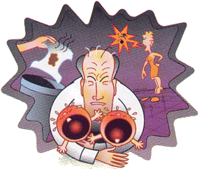

|
 Ο γάμος: |
|
|
Τι φοβούνται οι άνδρες γύρω από τον γάμο; Τη μονοτονία. Θα μπορούσα να απαντήσω με μία λέξη. Αλλά αυτό θα μπέρδευε ακόμη περισσότερο την εντύπωση που έχετε για εμάς αντί να την ξεδιαλύνει. Η αλήθεια είναι όμως ότι οι περισσότεροι από εμάς αντιπαθούμε την ιδέα του γάμου διότι έχουμε παρατηρήσει ότι εσείς οι γυναίκες μόλις βγάλετε το νυφικό μεταμορφώνεστε. Σε κάτι άλλο πολύ πιο πεζό, λιγότερο ερωτικό, περισσότερο ατημέλητο και casual. Μπορεί αυτό να μη συμβαίνει από τις πρώτες εβδομάδες, μήνες ή χρόνια. Την πρώτη πενταετία όμως η όμορφη, σέξι γυναικάρα με τον δυναμικό χαρακτήρα και τα πολύ όμορφα εσώρουχα έχει γίνει καπνός. Και τη Θέση της έχει πάρει μια γυναίκα που δεν έχει κανένα πρόβλημα να αισθάνεται από μόνη της διαρκώς αδικημένη, που νιώθει ότι έχει κάθε λόγο να είναι με όλα δυσαρεστημένη. Η παραδοσιακή (και ολίγον παρωχημένη) φράση "δεν φταις εσύ, εγώ φταίω που παντρεύτηκα εσένα και όχι τον "χ" που ζει στο Παρίσι, τον "Ψ" που έχει λεφτά, τον "Υ" που έχει την γυναίκα του θεά" είναι τυχαίο ότι έχει κατοχυρωθεί στις γυναίκες; Έχετε ακούσει πολλούς άνδρες να λένε "δεν έπρεπε να παντρευτώ εσένα, έπρεπε να πάρω την άλλη, που στα 40 της φοράει ακόμη ζαρτιέρες είναι πολύ κοινωνική και βλέπει και ποδόσφαιρο μαζί με τον άνδρα της", και όμως κάτι τέτοια μετρούν πολύ για εμάς. Και δεν αναφέρομαι μόνο στο σεξ. Το οποίο, ούτως ή άλλως, μετά τον γάμο είναι καταδικασμένο σε αργό, βασανιστικό θάνατο. Ώσπου μια σχέση να οδηγήσει στην εκκλησία, ανάμεσα στον άνδρα και στη γυναίκα κυριαρχεί μια υγιής, ακόρεστη σεξουαλική επιθυμία. Από την οποία απορρέει και μια αμοιβαία υποχωρητικότητα. Ο άνδρας εκφράζει τη φύση του, η γυναίκα τη δική της, ενώ συγχρόνως προσπαθεί να ανιχνεύσει τα στοιχεία που Θα της μαρτυρήσουν αν ο σύντροφος της κάνει και για σύζυγος. Μετά τον γάμο ο άνδρας συνεχίζει να είναι αυτό το ερωτικό κάθαρμα που είχατε τόσο αγαπήσει, μόνο που τώρα το αίσθημα της ασφάλειας, της αιωνιότητας, δηλαδή της ρουτίνας - που τόσο πολύ αγαπάτε εσείς οι γυναίκες -, γίνεται Θηλιά στον λαιμό του αρσενικού. Όλα σοβαρεύουν. Όλα είναι δεδομένα. όλα είναι τοις μετρητοίς. Σαν την Ημέρα της Μαρμότας. Κάθε ημέρα τα ίδια. Και έτσι ύστερα από λίγο εκείνος κυκλοφορεί στο σπίτι με την κοιλιά του να κρέμεται από το παντελόνι και εκείνη με ένα ξεχειλωμένο Τ-shirt, μια φαρδιά φόρμα και ένα μολύβι να της συγκρατεί τα μαλλιά. |
O Θάνατος του ερωτισμού, του αυθορμητισμού, της ζωντάνιας. Και μόνο η πιθανότητα μας παγώνει το αίμα. Με τον γάμο ο άνδρας υποτίθεται ότι "νοικοκυρεύεται". Ενώ η γυναίκα εκπληρώνει τη βασική της αποστολή στη ζωή. Όλα αυτά είναι ιδέες παλιές, ξεπερασμένες, άχρηστες και βαρετές. Θα χρειαστούν όμως αρκετές δεκαετίες καλοζωίας μέσα σε έναν κόσμο καπιταλιστικό ώσπου να ξεγραφτεί από το DNA σας. Ως τότε Θα μασάτε την ίδια τσίχλα ότι "πολύ απλά οι άνδρες φοβούνται τον γάμο επειδή φοβούνται τις ευθύνες, αποφεύγουν να μεγαλώσουν. Σαχλαμάρες. Ο άνδρας έχει γεννηθεί πνιγμένος στις ευθύνες. Και, εκτός αυτού, από πότε είναι κακό να θέλεις να διατηρήσεις την παιδικότητα και την ανεμελιά στη ζωή σου; Από πότε είναι αδίκημα να επιμένεις να πιστεύεις στον Aι-Βασίλη; Από πότε είναι μειονέκτημα να αναζητείς τη μαγεία στην επόμενη στάση του μετρό; Όχι, δεν αποφεύγουμε τον γάμο επειδή δε θέλουμε να μεγαλώσουμε. Τον αποφεύγουμε γιατί δεν έχουμε την ανασφάλεια μέσα μας, δεν είμαστε ετερόφωτοι, δεν χρειαζόμαστε έναν άλλον άνθρωπο για να αισθανθούμε προστασία ή ολοκλήρωση. Και επειδή μας ενοχλεί πολύ, μα πάρα πολύ όλη αυτή η πίεση που μας ασκείτε μόλις νιώσετε τα γονίδιά σας να χτυπούν κόκκινο. "Μπιπ, μπιπ! Ήρθε η ώρα σου να παντρευτείς Σε λίγα χρόνια δεν θα μπορείς να κάνεις πια παιδιά" χτυπάει ο συναγερμός μέσα σας. Εμείς όμως τι φταίμε; Να είμαστε ειλικρινείς. Κανένας δεν πρέπει να παντρεύεται προτού καλύψει μερικά βασικά κενά στη ζωή του. Προτού τραβήξει την ελευθερία του από τα μαλλιά και την κολλήσει στον τοίχο ενός κακόφημου μπαρ για να της δώσει ένα καυτό φιλί στο στόμα. Προτού νιώσει ότι τα έκανε, τα έζησε, τα γνώρισε όλα. Προτού νιώσει ότι το μόνο που θα ήθελε να κάνει στη συνέχεια είναι να παντρευτεί τον σύντροφό του. Η κοινωνική φύση της γυναίκας όμως την έχει υποχρεώσει να τα "πουλάει" όλα αυτά μόνο και μόνο χάριν της ασφάλειας. Μιας υποτιθέμενης ασφάλειας που στηρίζεται στο συμβιβασμό, στο ψέμα και στις ερωτικές φαντασιώσεις (με ξένες πρωταγωνίστριες και πολλούς γκεστ σταρ). Νίκος Πιπέρης για το ΒΗΜΑDONNA 28/4/02 |
| "Ώσπου μια σχέση να οδηγήσει στην εκκλησία, ανάμεσα στον άνδρα και στη γυναίκα κυριαρχεί μια υγιής, ακόρεστη σεξουαλική επιθυμία" | |